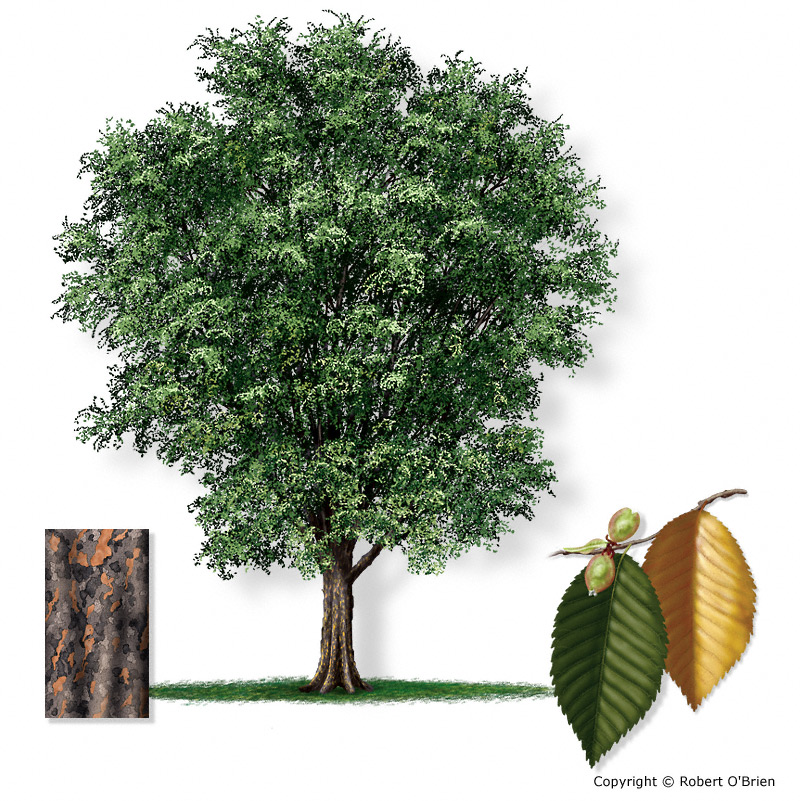

Elm

The Elm is a deciduous tree that's hard to miss. Some species can grow as high as 115 feet tall with leaf canopies that stretch out as far as 80 feet wide. In addition to its impressive size, the Elm has a number of other noteworthy characteristics, including:
-
Bark: The Elm tree's bark features a unique grayish blue color that turns ash gray as it ages. The surface of the bark is also eye-catching with its thick, uneven creases and intersecting ridges.
- Leaves:The leaves of the Elm tree are oval with asymmetrical bases and serrated edges. The underside of the leaf features baby fine hairs while the top side showcases 15 pairs of branching veins. The leaves are dark green in the spring and summer, but turn deep yellow or chartreuse in autumn.
- Flowers: Elm trees produce dense clusters of tiny, green blossoms which emerge from reddish brown buds. Depending on the type of Elm, the buds can feature an almost black hue.
Along with its trademark characteristics, the Elm is also known for its hardiness and longevity. Some mature Elms have survived for more than 300 years.